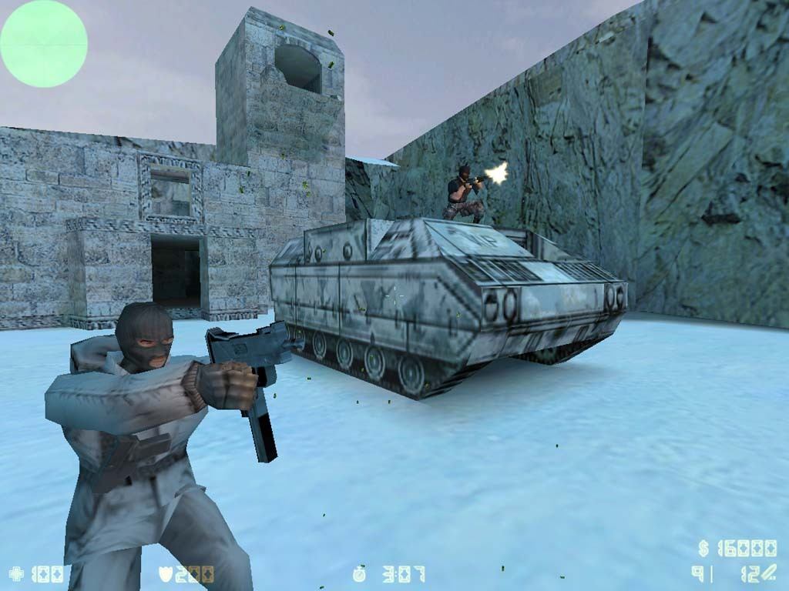
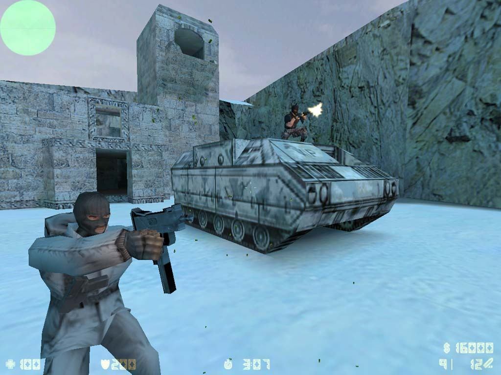
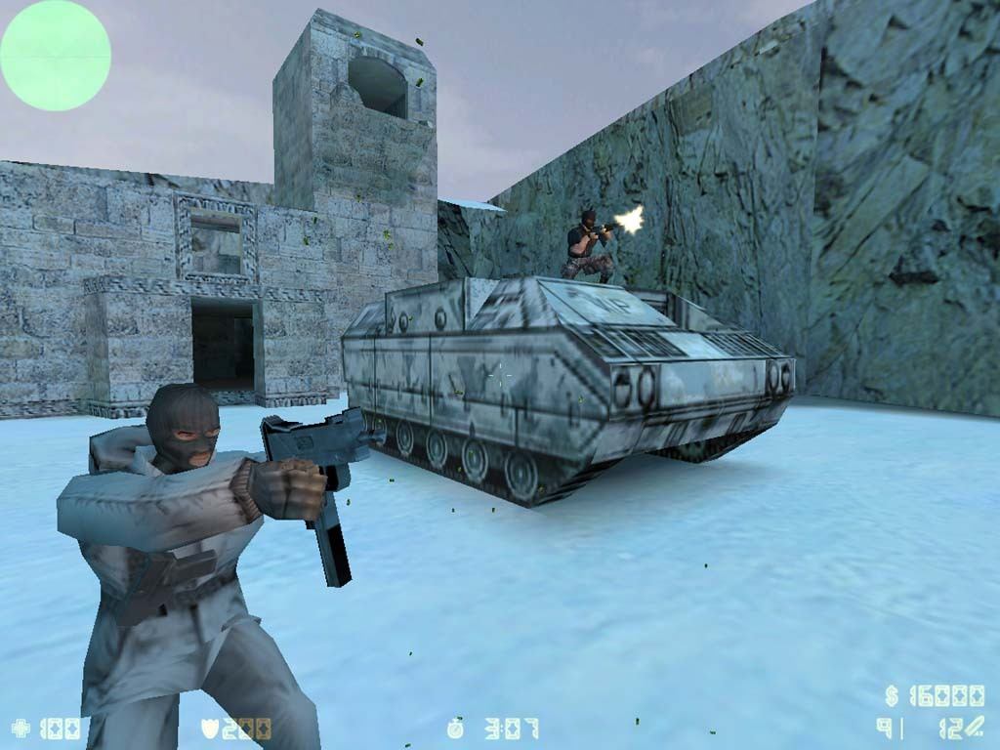

O jogo Counter-Strike nasceu de um simples mod, sem a pretensão de se tornar um grande sucesso, mas ao permitir que equipes de jogadores (ou clãs) entrassem em disputa, conseguiu alcançar um destaque que nem seus produtores poderiam prever.
Lista de qualidades do jogo
Lista de benefícios do jogo
